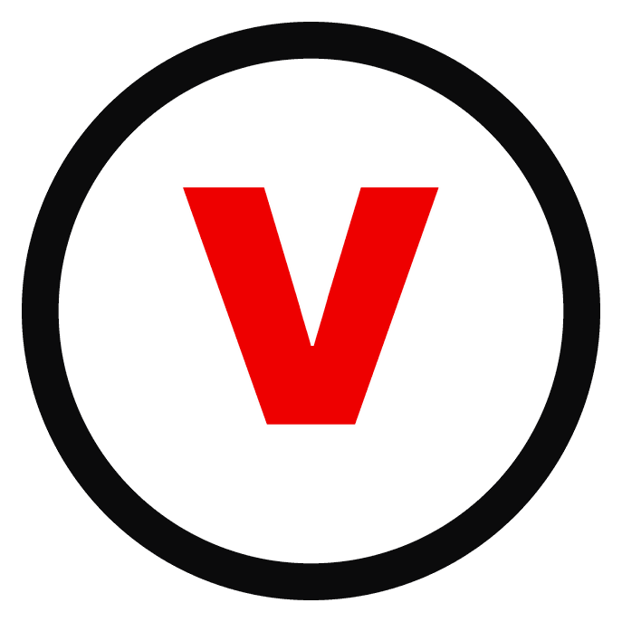

This page defines the voice, tone, and messaging standards for communications written to employees and teams. It is meant to be read by people drafting updates, and by the systems and AI tools that help them draft.
Five qualities every piece of internal communication should carry, regardless of author or channel.
Say the plain thing first. Lead with what changed and what it means, then add color. No wordplay at the expense of a fast read.
Write like a person who knows the answer, not like a policy document. Cut hedging phrases and passive voice wherever they hide who did what.
Every message has a person on the other end of it. Acknowledge effort, change, and impact before asking for anything.
Even hard news points somewhere. Close with what's next, not just what happened.
Write so it lands the same in a call center, a field van, and a headquarters office. Avoid references only desk-based readers would get.
The recurring themes leadership wants reinforced across quarters. Tie major announcements back to one of these where it's honestly true.
Reliability is earned every day, not claimed once. Reference specifics over adjectives.
New technology is framed by the problem it solves for a customer or a colleague, not by the technology itself.
Frontline, field, and corporate work is one effort. Comms should connect a local win to the bigger picture.
Growth, training, and recognition news gets real estate, not just product news.
The fast checks for whether a draft is on-voice before it ships.
Reference for word choice an authoring tool should apply automatically.
| Topic | Use | Avoid |
|---|---|---|
| Company name, first reference | Verizon | VZ / the company |
| Non-manager staff | team members, colleagues | resources, headcount |
| Field and store staff | frontline team | non-corporate staff |
| Numbers under 10 in body copy | spelled out (three, seven) | digits (3, 7) |
| Serial comma | used consistently | inconsistent within one piece |
| Change announcements | what's changing, what stays the same | changes framed only as gains |
The five voice qualities stay constant. What flexes is formality and length.
Measured, direct, owns the decision. Longer lead paragraph is acceptable if the news is complex.
Under 300 characters, one idea, action-first. Written for a phone screen between calls.
Warmer, specific about who and what. Light enthusiasm is fine; avoid exclamation-point stacking.
Plain language over legal phrasing wherever the two say the same thing. Link out to full policy text.
Color and type direction for any generated assets that accompany a communication. Full logo usage rules live on the brand portal, not here.

Headlines
Bold, tight tracking, used for headlines and section titles only.
Body copy
Regular weight, generous line height, no more than 65 characters per line.
Same news, rewritten to standard. This is the kind of pass an authoring tool should make automatically.
It has been determined that, effective the beginning of next quarter, certain scheduling processes within select regional operations will be transitioned to a new system in order to improve overall efficiency across the organization.
Starting next quarter, three regions move to a new scheduling system. It's built to cut the time team members spend managing shift swaps, based directly on feedback from the frontline. Your regional lead will share exact dates this month.